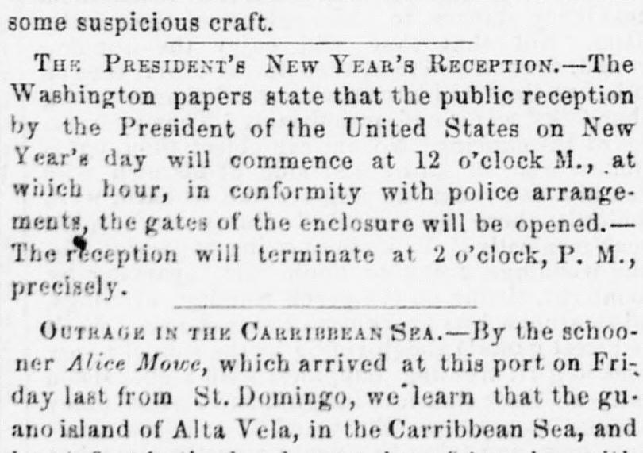
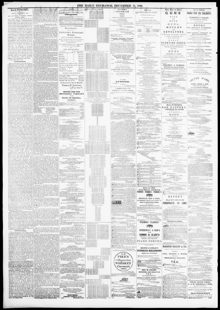

See the full pageVer la página completaDomingo, we'learn that the gu ano island of Alia Vela, inDomingo, sabemos que la isla de guano de Alta Vela, en
Based on the arrival of the schooner Alice Move from St. Domingo, The Daily Exchange reported that the guano island of Alta Vela in the Caribbean Sea, legally possessed by American citizens, was forcibly seized by the Dominican Government. The newspaper stated that American property was destroyed and the settlers were sent as prisoners to St. Domingo.A raíz de la llegada de la goleta Alice Move procedente de Santo Domingo, The Daily Exchange informó que la isla guanera de Alto Velo en el mar Caribe, en posesión legal de ciudadanos estadounidenses, fue incautada por la fuerza por el gobierno dominicano. El diario afirmó que las propiedades estadounidenses fueron destruidas y los colonos fueron enviados en calidad de prisioneros a Santo Domingo.
FULL TEXT:TRADUCCIÓN:
OUTRAGE IN THE CARRIBBEAN SEA.—By the schooner Alice Mowe, which arrived at this port on Friday last from St. Domingo, we learn that the guano island of Alta Vela, in the Carribbean Sea, and heretofore in the legal possession of American citizens, had been forcibly seized by the Dominican Government, American property destroyed, and the settlers sent as prisoners to St. Domingo.ULTRAJE EN EL MAR CARIBE. —Por la goleta Alice Mowe, que llegó a este puerto el viernes pasado procedente de Santo Domingo, sabemos que la isla de guano de Alto Velo, en el Mar Caribe, y hasta aquí en la posesión legal de ciudadanos estadounidenses, había sido capturada por la fuerza por el Gobierno Dominicano, propiedad estadounidense destruida, y los colonos enviados como prisioneros a Santo Domingo.
The Daily Exchange. Baltimore, Md., December 31, 1860. Page 2.